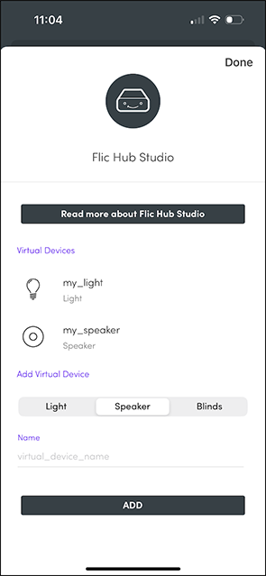
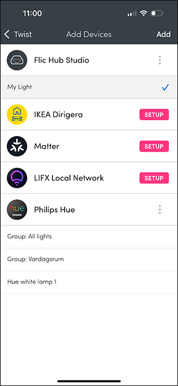
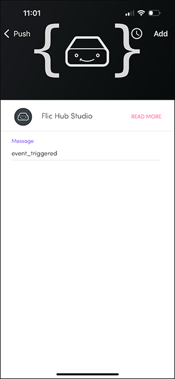

With the addition of the flicapp module, you are now able to use Flic Twist as an input for your Flic Script apps.
In order to seamlessly continue to work with the rest of your smart home devices that you might have assigned to other triggers on the Flic Twist, we introduce the concept of Virtual Devices. A Virtual Device is handled by the Flic Hub firmware just like any other supported real device, but its functionality is implemented by the user in the Hub SDK, typically by writing some kind of bridge software that sends commands and receives update events over the LAN to/from the real device. If for example the brightness of a (real) light is changed by some external means, it is possible to tell the Flic Hub firmware from javascript about the new brightness level, which the hub then forwards to the Flic Twist, so that the LED status can update accordingly. That way when you twist it, it will start from the correct position.
We are also adding a "message" action that can be used to send arbitrary strings to your scripts whenever the action is triggered. The intended use case is to be able to trigger custom code also for Push/Double Push in the Selector feature or perform some action when a specific point is reached in Advanced Dimming or Scene Blender.
The virtual devices can be created in the Flic App and be set to be controlled by a Flic Twist as follows:
 
Using this piece of code, updates are received in your javascript code after configuring a virtual device to be triggered in the Flic App for a specific Flic Twist:
const flicapp = require("flicapp");
flicapp.on("virtualDeviceUpdate", (metaData, values) => {
// The values object can contain hue, saturation, brightness, colorTemperature, volume, position (for blinds)
console.log(`Twist ${metaData.buttonId} updated virtual device ${metaData.virtualDeviceId} of type ${metaData.dimmableType} with these values: ${JSON.stringify(values)}`);
});When a device is modified externally, we use this function to inform the system of the change:
flicapp.virtualDeviceUpdateState(dimmableType, virtualDeviceId, values);The dimmableType can be either "Light", "Speaker" or "Blind". The values is an object containing at least one of the fields mentioned above that is appropriate for the corresponding dimmableType. For example:
The values themselves are always floating point numbers between 0 and 1. Configure an action message to be triggered by assigning the following action in the Flic app:

The action messages are easy to receive, just register a listener as follows:
flicapp.on("actionMessage", message => console.log(`Got a message: ${message}`));Find the full documentation here: